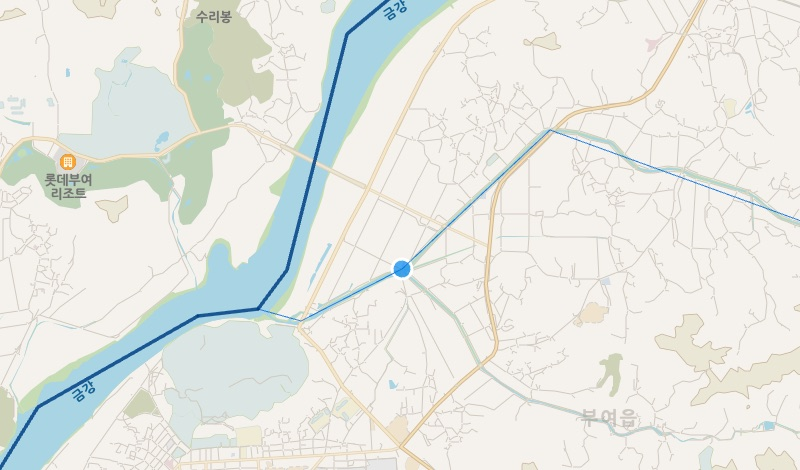
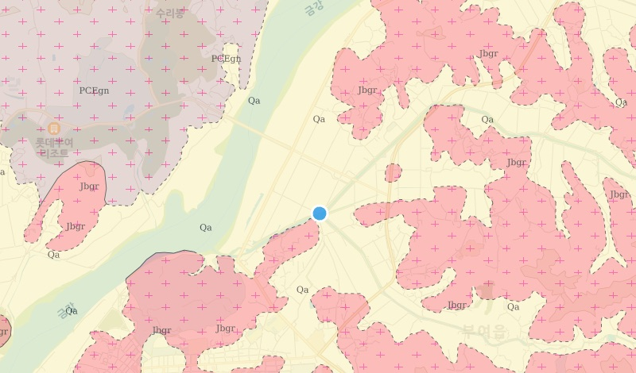
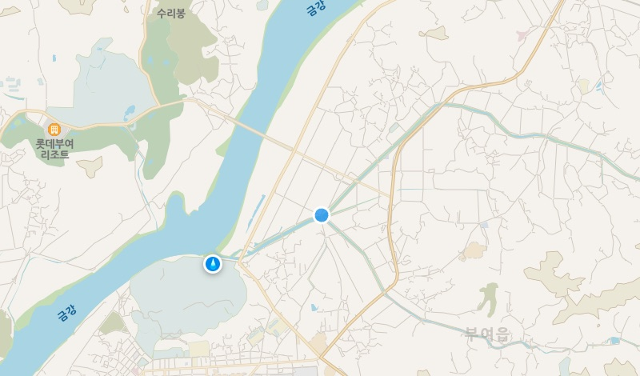
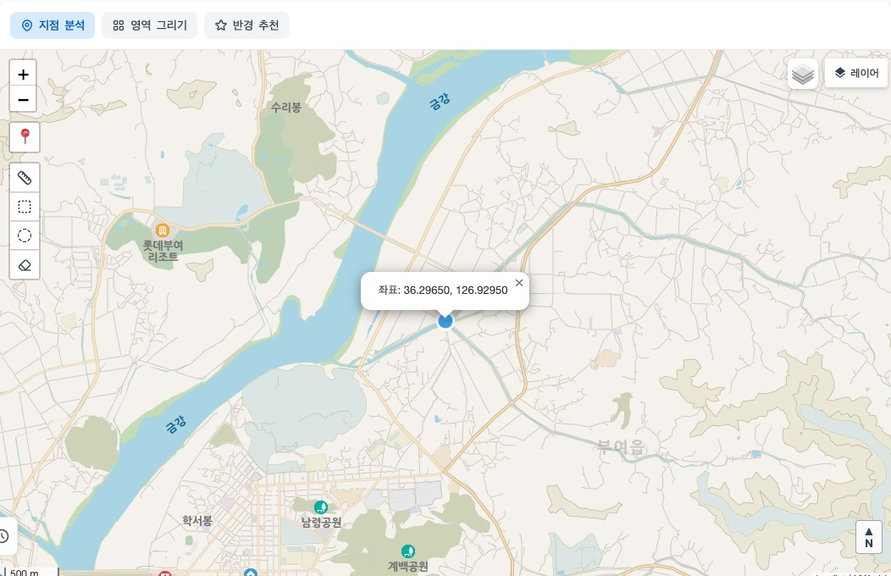
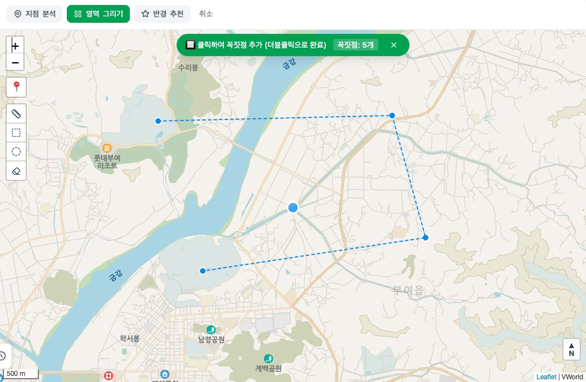
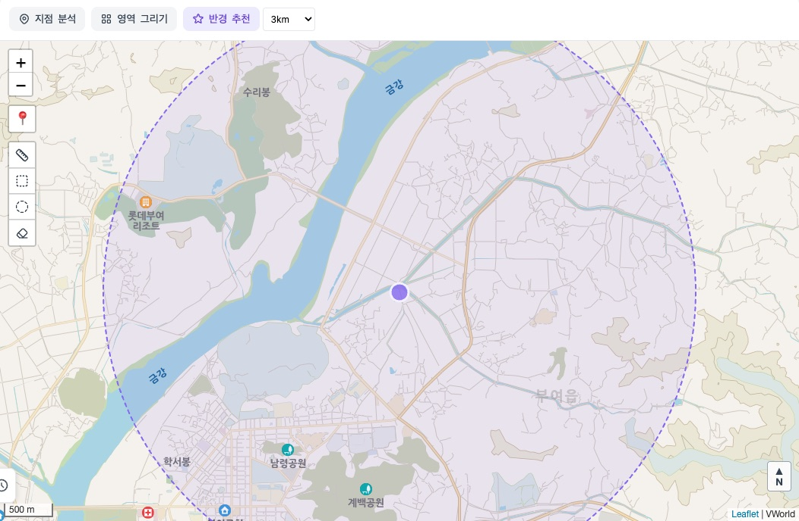
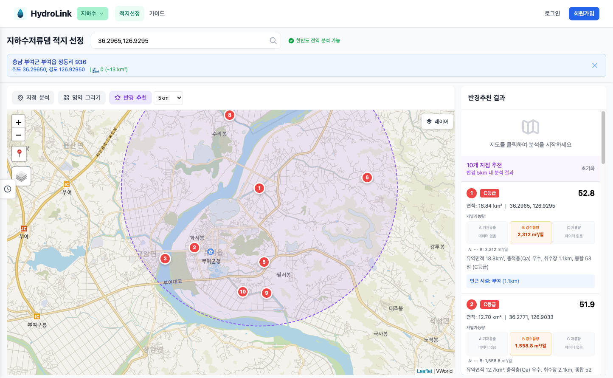
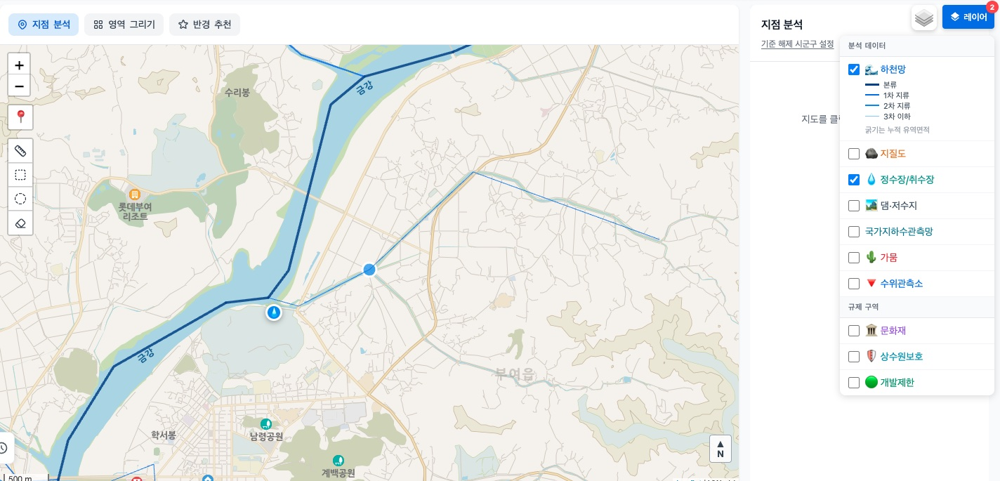
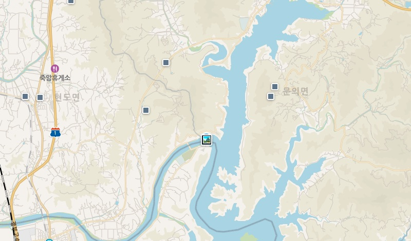
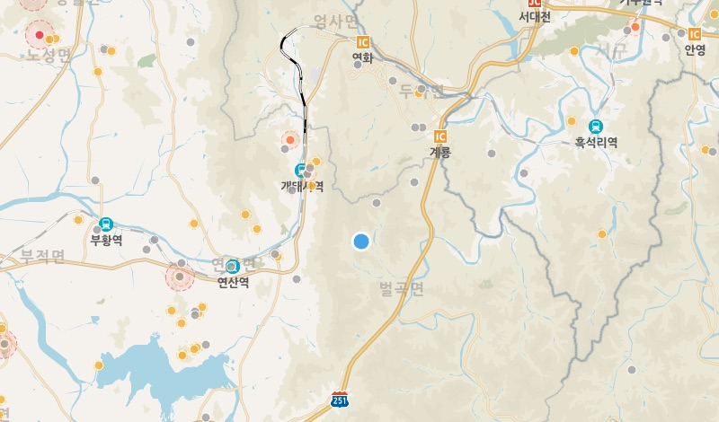

적지를 고르는 방법
하천망에서 후보 지점을 뽑고, 아래 기준들을 함께 비교해 순위를 매기는 방법입니다. 항목을 가리키거나 누르면 그 기준의 화면이 나옵니다.


노란 부분 Qa = 충적층
- 하천망유역면적이 일정 이상인 하천에서 후보 지점을 뽑습니다.
- 충적층지질도에서 충적층(Qa)인지 확인합니다.
- 정수장까지의 거리분석 지점에서 가까운 정수장·취수장까지의 거리를 봅니다.
- 기저유출평소 하천에 흐르는 지하수 성분의 크기입니다.
지도에서 후보지를 찾는 세 가지 방법
분석 화면 위쪽의 세 버튼으로 찾는 방식을 고릅니다.

지점 분석
지도에서 누른 한 지점을 분석 대상으로 삼습니다.

영역 그리기
지도 위에 꼭짓점을 찍어 그린 영역 안을 분석 대상으로 삼습니다.

반경 추천
기준 지점에서 반경을 정하면 그 안에서 후보 지점을 찾습니다.
분석 결과
후보 지점이 점수 순서로 나열되고, 지점마다 등급과 유역면적, 가까운 시설까지의 거리를 볼 수 있습니다.

분석 결과 화면의 예시입니다(충남 부여 일대). 이전 버전에서 찍은 화면이라 지금 화면과 다를 수 있습니다.
지도에 겹쳐 볼 수 있는 자료
레이어 목록에서 켜고 끄며 후보지 주변을 직접 확인할 수 있습니다.

레이어 목록에서 하천망과 정수장·취수장을 켠 모습입니다. 켠 자료가 지도에 겹쳐 보입니다.
- 하천망본류와 지류를 굵기로 구분해 표시합니다.
- 지질도암상을 색과 기호로 표시합니다. Qa가 충적층입니다.
- 정수장·취수장물을 쓰는 곳의 위치입니다.

댐·저수지이미 있는 수자원 시설입니다.
문화재문화재 위치를 점으로 표시합니다.
이 밖에 국가지하수관측망(지하수위를 재는 지점)과 수위관측소(하천 수위를 재는 지점)도 켜고 끌 수 있습니다.
특허 출원 (출원번호 10-2026-0080613)
자주 묻는 질문
누가 쓸 수 있나요?
지금은 관리자가 승인한 계정만 쓸 수 있습니다. 소속과 하려는 일을 알려 주시면 이용 방법을 안내해 드립니다.
화면에 나오는 자료는 어디서 오나요?
배경지도는 VWorld, 지질도는 한국지질자원연구원 자료를 씁니다. 이 기관들과 제휴하거나 인증을 받은 것은 아닙니다.
특허는 어떤 상태인가요?
특허를 출원했습니다(출원번호 10-2026-0080613).
하천 유량 측정도 할 수 있나요?
네, 같은 서비스에서 유량 측정과 불확실도 계산을 할 수 있습니다. 유량 측정 소개 보기
이용을 원하시면 문의해 주세요
소속과 하려는 일(적지 검토, 유량 측정 등)을 알려 주시면 이용 방법을 안내해 드립니다.
이미 승인된 계정이 있으면 로그인해서 바로 쓸 수 있습니다.